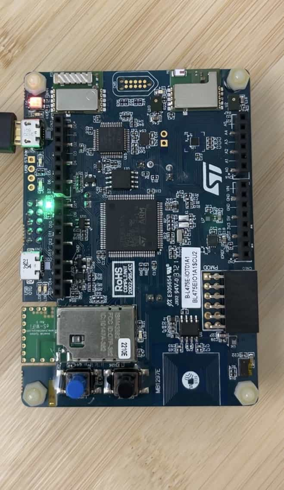

BLDC Simulator
for 2G Engineering
BLDC Simulator Demo
- GitHub Repo
- Developed firmware for BLDC Simulator to test sub-sea level rotary actuator
- Utilized hall effect sensors, SPI, and I2C to control & observe motor-actuator interface
- Coordinated dual cores on RP2040 to reliably process speeds of up to 140 rpm
YouLostIt (lightweight AirTag)
for UCSD CSE 190B with Prof. Aaron Schulman

YouLostIt STM32 Microcontroller
- GitHub Repo
- Implemented a lightweight AirTag using a STM32 microcontroller with a team of 3
- Utilized accelerometer, I2C, and UART to collect and transfer data
- 1st place for lowest energy implementation achieved via use of Stop2 sleep mode